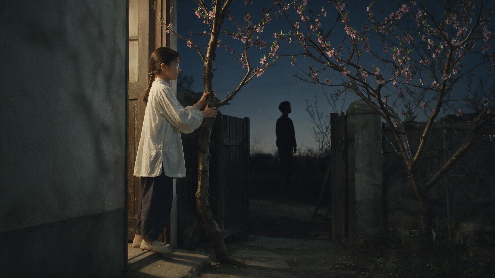

喂，你还好吗？
我想成为更好的自己！
"哦，你也在这里吗？"

背景：由张爱玲的一篇小短文《爱》想起——那些躺在好友列表里、却再也没有交集的人。
不时地，我莫名地陷入一种伤感的情绪中。尤其是在使用微信的漫长岁月里，我几乎未曾删除过任何好友，即使他们中的许多人，只是生命中的匆匆过客。
有时，当我试图在微信中搜索某个人时，我会无意间发现一些几乎未曾联络过的人。点开他的头像，却愕然发现：他早已把我从好友列表中删除。
我并不完全理解微信这样的设计逻辑——为何删除了对方，我仍能看到他的部分信息。然而，与此同时，也有很多我并未与之交流的人，他们依旧安静地存在于我的好友列表中。
前几天，我听到一句"相逢即是缘分"。这让我思索起这个词的起源和含义——它似乎是一种无法用言语精确描绘的相遇感觉，我们将其定义为"缘分"。
这种思考引导我回顾当初添加这些好友的原因，以及在各自生活的变迁中，我们都经历了什么。我在想，这种状态是因为我个人的原因所致，还是因为他们中的某些人进行了批量清理好友的操作？这些问题，常常使我对着屏幕出神良久。
在这个浩瀚的世界中，我们仿佛生活在各自的平行宇宙里，只有在某个特定的时刻，两个世界才会交汇在一起。然后，可能就再也没有交集。
回想起高中时期，我的 QQ 昵称是"喂，你还好吗？"，这句话改自张爱玲的散文集《爱》。这个昵称如今在我看来，更像是对那些曾经交汇又渐行渐远的人们，一种温柔的问候。
张爱玲的小短文：《爱》
这是真的。
有个村庄的小康之家的女孩子，生得美，有许多人来做媒，但都没有说成。那年她不过十五六岁吧，是春天的晚上，她立在后门口，手扶着桃树。她记得她穿的是一件月白的衫子。对门的年轻人同她见过面，可是从来没有打过招呼的，他走了过来。离得不远，站定了，轻轻的说了一声："哦，你也在这里吗？"她没有说什么，他也没有再说什么，站了一会，各自走开了。
就这样就完了。
后来这女子被亲眷拐子卖到他乡外县去做妾，又几次三番地被转卖，经过无数的惊险的风波，老了的时候她还记得从前那一回事，常常说起，在那春天的晚上，在后门口的桃树下，那年轻人。
于千万人之中遇见你所遇见的人，于千万年之中，时间的无涯的荒野里，没有早一步，也没有晚一步，刚巧赶上了，那也没有别的话可说，惟有轻轻的问一声："哦，你也在这里吗？"
俗到极致即为雅，雅得过头便是俗——是谓雅俗共赏。